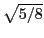

We show that a pairwise aggregation-based algebraic 2-grid method,
applied to the linear system  arising from a 1D model problem for
Poisson's equation with Dirichlet boundary conditions, reduces the
arising from a 1D model problem for
Poisson's equation with Dirichlet boundary conditions, reduces the
 -norm of the error at each step by at least the factor
-norm of the error at each step by at least the factor

. We then generalize this result to problems with the same eigenvectors but different eigenvalues from the model problem, and also to problems with different eigenvectors that are especially well-suited to the method. Finally, we discuss the reduction in the A-norm of the error when the 2-grid method is replaced by a multigrid V-cycle and indicate that conjugate gradient acceleration is required in order to improve the degraded performance of multigrid V-cycle.